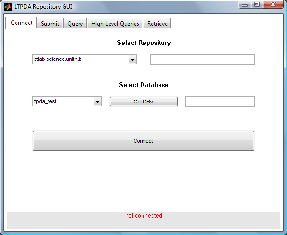

| LTPDA Toolbox™ | contents | |
The first tab pane is the connection panel.

The user can select one of the pre-defined hosts or type a new hostname or IP address into the Server hostname field. If the database name is already known, it can be entered directly in the text field. If the database name is not known, a list of LTPDA repositories available on that particular host can be retrieved by clicking on the 'Get DBs' button. If the user has not already authenticated with the host, a login dialog will be presented prompting the user for a username and password. If authentication is successful, the drop-down menu to the left of the database name text entry field will be filled with the names of the available repositories.
The user can then select a repository and connect to it by clicking the 'Connect' button. If the user has permissions to connect to that particular repository, the repository GUI will hold a database connection object for use on the other panels of the GUI.
To disconnect from the current repository, click the 'Disconnect' button. This must be done before being able to connect to a different repository.
| |
Using the LTPDA Repository GUI | Submitting objects to a repository | |
©LTP Team